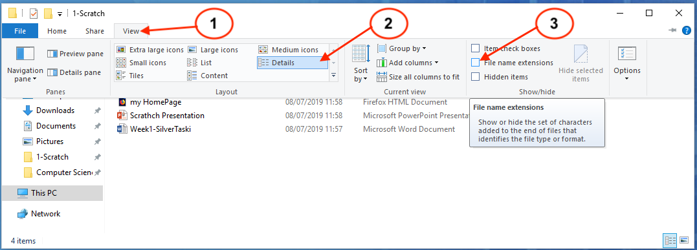
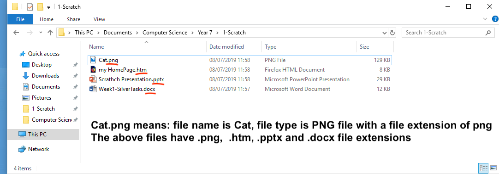

File Types
1 File types
What is a file and what is file type?
- A file is a piece of saved work with a name on a computer
- A file has a
nameand atype. In your file explorer windown, you will see a list of folders and files. The names, types and date created can be seen as shown in the following image:

- You can click on the name, or the type or the date created tab to sort the files by their name, their types or date created.
A file typeidentifies what software or app or program can be used to open it. For example, the above file ="Week1-SilverTaski" is a MicroSoft Word Document, therefore can be openned by MicroSoft Word.
File types and file extensions
- As you have seen from above image, the files have different types so we know which app, or software can be used to open them.
- When you double click on a file, your computer will normally opens the file using the correct software by using a piece of information called
file extensionto help it decide which application to use to open it. - This
file extensionis part of the file name but it is normally hidden from you. - To see the file extensions of your file, you can following the step-by-step instructions as the images shown here:
 
How to open a file with the correct software
- Most of the time, you can open a file using the correct software by just double clicking on it and your computer will be able to open it using the software of your desire.
- But Some file types/extensions can be openned by many different software. If you want to open it by using a speicific software not the default "double clicking" one, you can
right clickon the file and chooseopen withoption to open it using one of the software from a list of choices. - If you fail to open it using above method, you can launch the software first and then choose to open the file from the desired software if you are sure the software can open it.
Think Time
- What happens if you change the file extension of a file to something else? For example, a file with the name "myWork.docx" to "myWork.html", will it open by double clicking on it, by Microsoft Word?